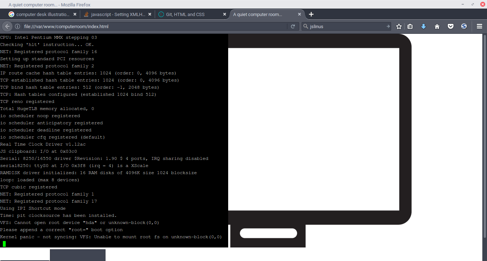

I could start talking about my life but it's kind of a long story with a fair amount of madness in it. It's one of these things that needs a long explanation.
The short form is that I'm from rural Alaska and have spent most of my life either there or in some third world country. I grew up glued to an Internet connection trying to understand the world I was in. I also grew up with some pretty serious issues with depression for reasons. The last ten years have been spent becoming more or less functional. Generally it seems like I'm playing life on hard mode.
All of the CakePHP stuff is in PHP of course. The webcomic was done with WordPress (I'm working on a Rails replacement, release date TBD). Getting the page backgrounds to change on certain pages was surprisingly difficult. The splash page was done with Parallax.js but it's hard for me to really classify it as a success. It does work on mobile, but there are weird things with the links if I recall correctly. It's less 'finished' and more like 'this got too hard to completely debug'
The Linux thing is done in javascript but of course the neat trick it does is to load a linux boot image (with some crazy XHRs).
One day I decided I wanted to live somewhere warm, so I flew to a foreign country where I didn't speak the language. I really wanted to stay so I talked my way into a programming job with no experience. Since them I've been working freelance, mostly on horrible legacy projects for which every new feature or fixed bug is a Pyrrhic victory that prolongs the life of something that needs to be replaced entirely.
So I've been aware of Fabrice Bellard's jslinux project since it was released, and figured that it could be a nice drop-in library that would snazz up a webpage. The general idea was to have a demo of a computer desk where one could turn on the computer and watch in amazement as it actually booted up. This did not work out.
So the first thing was to create the basic page structure per normal, but then I had installed npm the other day, so I figured I would figure out what this bower thing was all about. It installed just fine, but Ubuntu has a package name conflict with node. So after resolving that, it was time for:
bower install bootstrap. Okay, good so far.
The problem is that while Bellard has allowed noncommercial use of his code, there doesn't seem to be a central repository for that, and apparently the code is arcane to the point of obfuscation. So the good news is that there's a de-obfuscated library on GitHub, but it doesn't seem to have been updated all that recently. But it did have a helpful hint that the code needed to be served from a web browser in order for the XHR requests to work out right. To the nginx config, Batman!
chmod 755 all the things!So eventually the files were being served correctly, and then the real problems started. The deobfuscated code complained about missing classes, but then failed to run anyway when that was sorted out. The console did have some interesting things to suggest that the issue was related to synchronous XHR requests, which have been apparently nixed by the standards bodies. However, the live code didn't throw such errors, so it seems to have been better maintained. So we copy the js files from the site and see what happens. Hmm, bunch of requests for .bin files living on the server (that I obviously don't have). Copy+paste the 404'd requests from Firefox's console, paste resulting URLs into a text file. Then write a loop to wget those (since they're obviously available from the server). Green blinking cursor: can has! Nothing else though. But then randomly it started working to some degree. The final result:
Yup. That's a kernel panic. Something with the kernel image must not be functioning correctly, but debugging kernel panics is not something I can get done in a day. So this is where we are at the moment. I'll probably keep working on this, but for now it's time to turn this in. Until next time!